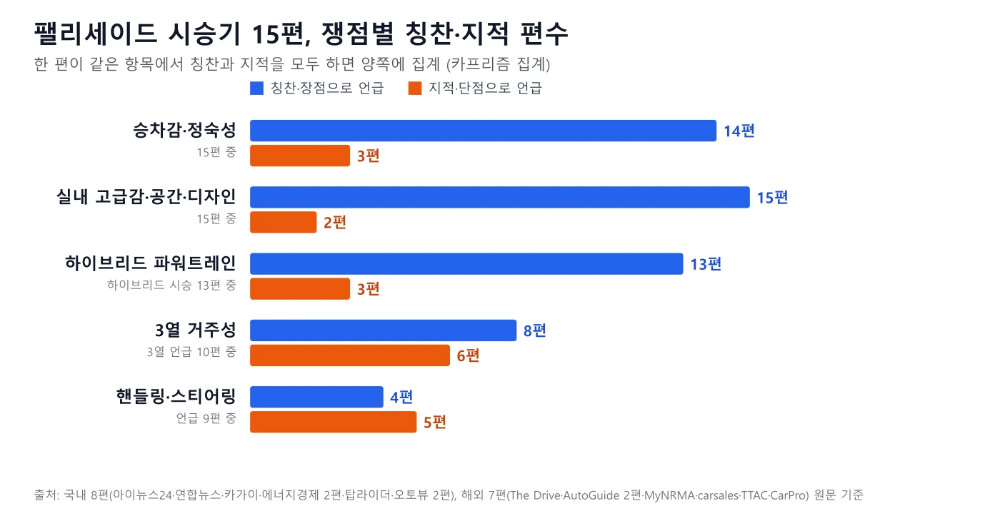
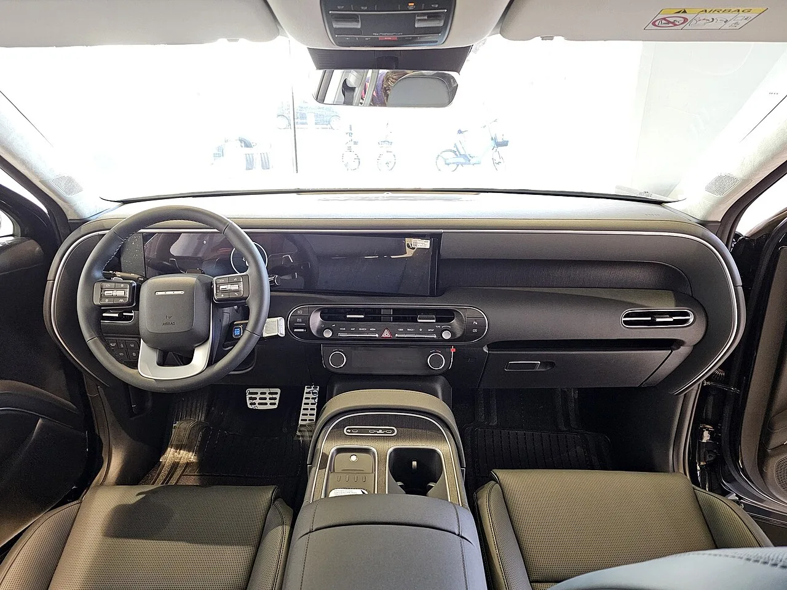
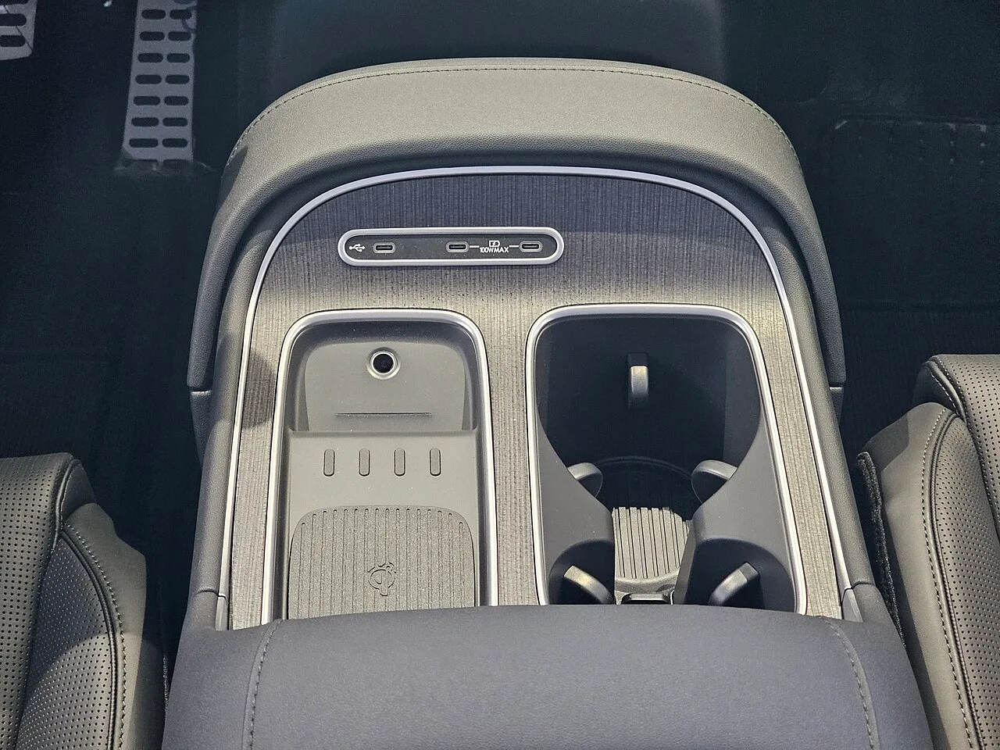
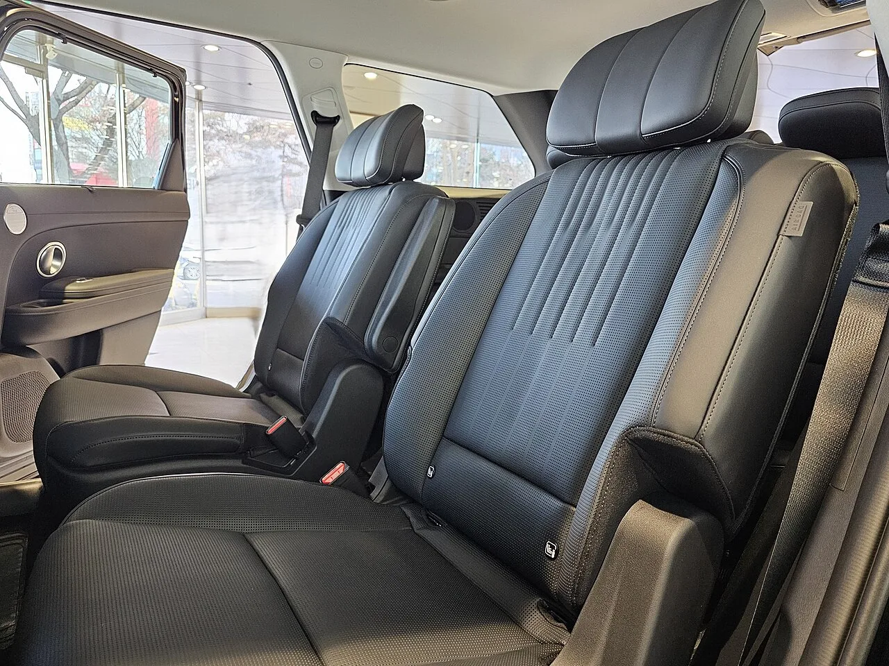
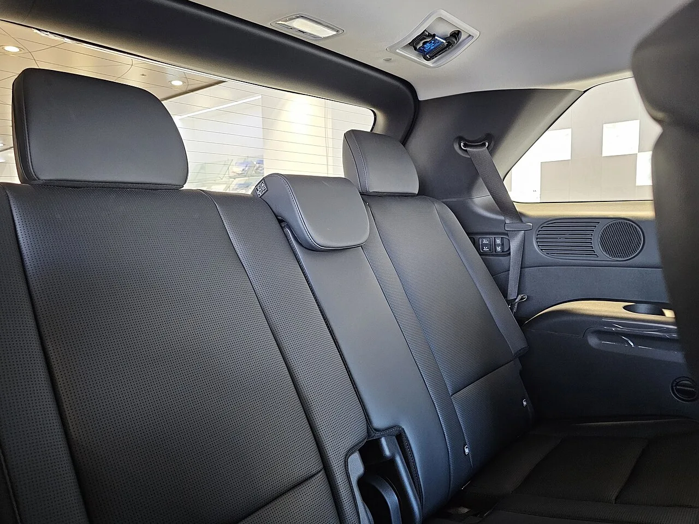
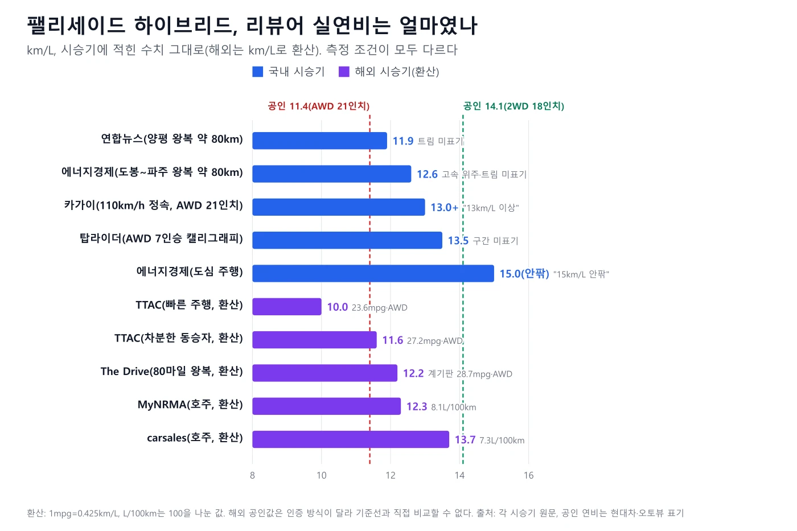
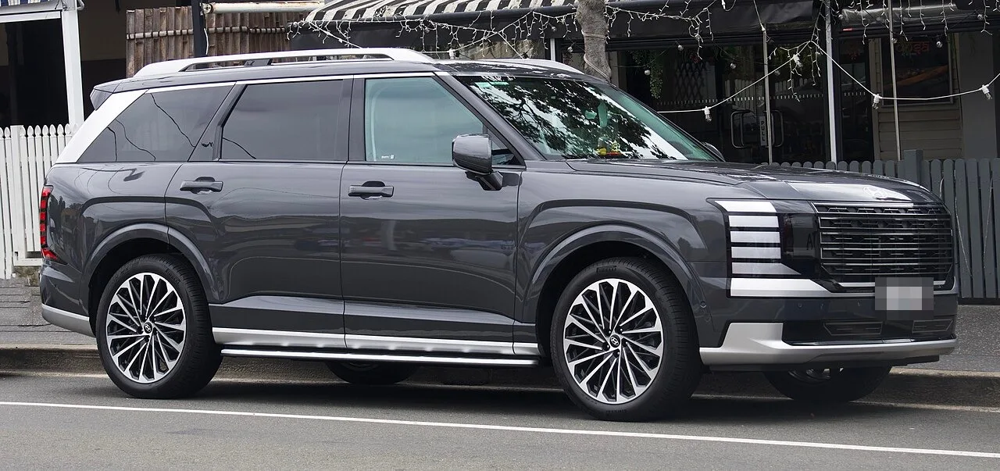
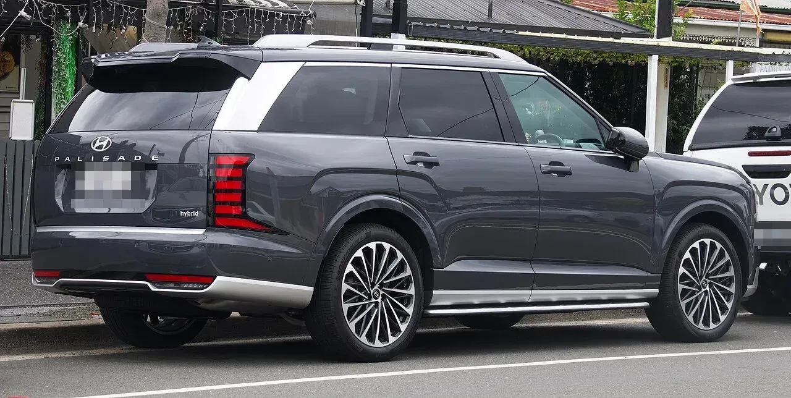
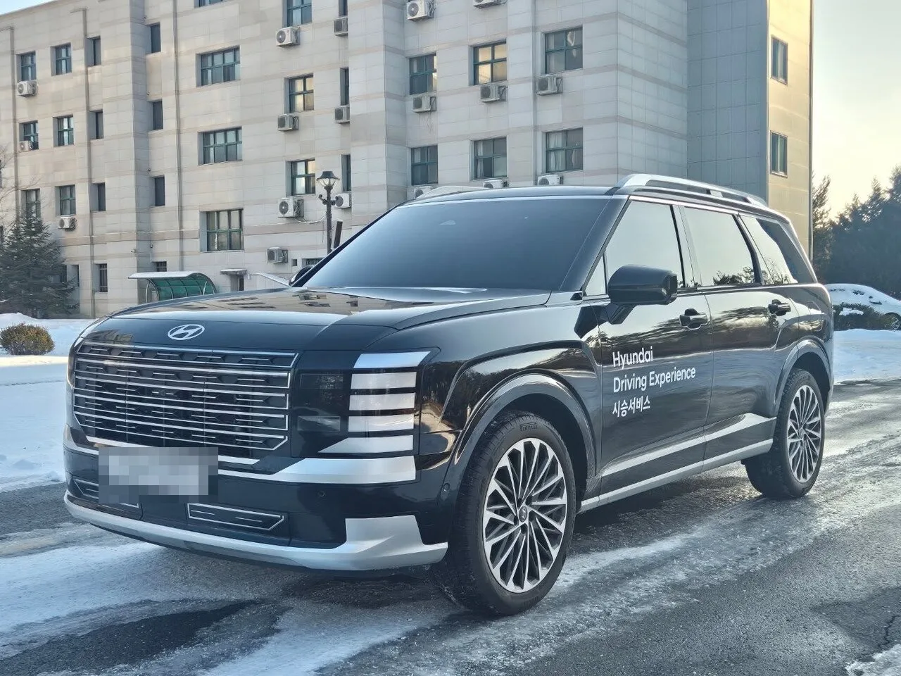

▲ 2026 팰리세이드 캘리그래피. 미국 애리조나 길버트의 현대차 딜러십에서 촬영한 북미 판매 차량이다 ⓒ HJUdall, Wikimedia Commons (CC0)
"팰리세이드는 무조건 하이브리드"라는 제목의 시승기가 있다. 그런데 그 말이 15편 전체의 합의일까? 2세대 팰리세이드(LX3)가 2025년 1월 국내에 출시된 뒤 국내외 시승기가 충분히 쌓였다. 카프리즘은 국내 8편과 해외 7편, 모두 15편을 원문으로 직접 열어 읽고 쟁점별로 몇 편이 어떻게 말했는지 셌다.
우리가 직접 시승한 기사가 아니라, 다른 매체의 시승기를 모아 비교한 종합 기사다. 수치와 인용은 각 원문에서 확인한 것만 적었고, 번역·요약한 문장은 따옴표를 쓰지 않았다. 가격은 현대차 공식 가격표(2026년 10월 1일 기준)를 따로 확인했다.
▲ 2026 팰리세이드 캘리그래피. 미국 애리조나 길버트의 현대차 딜러십에서 촬영한 북미 판매 차량이다 ⓒ HJUdall, Wikimedia Commons (CC0)
1. 15편은 어떤 리뷰인가 — 읽은 것과 읽지 못한 것
모은 방식부터 밝힌다. 국내외 검색에서 나온 팰리세이드 시승기·리뷰 가운데 원문 페이지를 실제로 열어 본문을 확인할 수 있었던 것만 대상으로 했다. 해외는 2025년 8월~11월 발행분, 국내는 2025년 2월~11월 발행분이다. 국내 시승기는 출시 직후(2025년 4월 하이브리드 미디어 시승회 전후)에 몰려 있다.
이 기사에 넣지 않은 것 Consumer Reports는 본문이 유료 회원 전용이라 읽지 못했다. Car and Driver와 Edmunds, Autoblog 원문은 접속이 막혀 열지 못했다. 보배드림에 번역 게재된 Autoblog 기사(2026.4.30)는 원문이 아니어서 제외했다. 열어서 읽었지만 표에서 뺀 것은 딜사이트의 가솔린 시승기(2025.1)와 현대차가 진행한 서울-부산 연비 테스트를 다룬 엠투데이 기사(2025.8)다. 앞의 것은 숫자 근거가 약하고, 뒤의 것은 기자 직접 측정이 아니라 제조사 테스트이기 때문이다.
시승 조건은 제각각이다. 하이브리드 AWD 21인치 캘리그래피(카가이·탑라이더·오토뷰 로드테스트·The Drive·TTAC·CarPro)가 많지만, 트림을 밝히지 않은 리뷰도 있다. 가솔린을 탄 리뷰는 오토뷰의 9인승 2.5T FWD(국내)와 AutoGuide의 북미 V6(해외) 두 편뿐이다. 북미 V6는 한국에서 팔지 않는 엔진이라 차체·실내 평가에만 참고했다.
2. 매체별 평가 한 줄 요약 15편
아래 표는 각 원문을 카프리즘이 요약·재구성한 것이다. 평점은 원문에 점수가 명시된 경우만 적었다. 오토뷰 로드테스트는 별점 항목(5점 만점)이 있지만 본문 텍스트에서 점수 값을 확인하지 못해 "별점 있음(수치 미확인)"으로 적었다.
| 매체(게재일) | 시승 모델·조건 | 평점 | 좋았던 점 | 아쉬운 점 |
|---|---|---|---|---|
| 아이뉴스24 (2025.4.28) | 하이브리드 7인승 캘리그래피 21인치 | 없음 | 가솔린보다 향상된 연비·동력, 저속 EV 주행의 부드러움, NVH 대책으로 유지한 정숙성, E-핸들링의 선회 시 롤 억제, 스테이 모드·V2L | EV 주행이 조용한 만큼 엔진이 켜지면 소음이 상대적으로 크게 느껴짐. 실측 연비·가격 언급 없음 |
| 연합뉴스(보배드림 게재) (2025.4.21) | 하이브리드, 트림 미표기. 서울 방이동~양평 왕복 약 80km | 없음 | 엔진 개입 이질감이 적고 변속이 부드러움, 무거워진 차체가 주는 안정감, e모션 드라이브로 개선된 승차감, 한결 고급스러운 실내 | 엔진 구동 시 소음, 트렁크 하부 공간 감소, 시승 후 연비 11.9km/L로 기대 이하 |
| 카가이 (2025.4.21) | 하이브리드 AWD 7인승 캘리그래피 21인치. 100km 이상 주행, 110km/h 정속 포함 | 없음 | 연비, 프리뷰 전자제어 서스펜션의 승차감, 334마력 출력, 3열 전동 시트 | 송풍구·공조 터치 패널이 값에 비해 소박함, 트렁크가 좁아짐, 3열 바닥이 높음, 100km/h 이상에서 2열로 노면 소음·풍절음 유입 |
| 에너지경제 (2025.5.6) | 하이브리드, 트림 미표기. 서울 도봉~파주 왕복 약 80km, 고속 위주 | 없음 | 조용하고 부드러운 주행, 출력·응답성, 1회 주유 1,000km 이상, 3열까지 여유로운 거주성, 코너링 때 안정적인 차체 제어, 스테이 모드·V2L | 별도 단점 항목 없음. 제원상 14~15km/L인데 실제 12.6km/L |
| 탑라이더 (2025.7.3) | 하이브리드 AWD 7인승 캘리그래피 21인치 | 없음 | 유연한 승차감, 엔진 가동 시 거의 없는 진동, 21인치에서도 좋은 충격 흡수, 고속 안정감, 실내 고급감 | 3열 바닥이 높음, 빠른 코너링에서 큰 롤, 운전석이 대시보드 쪽으로 당겨진 느낌 |
| 오토뷰 로드테스트 (2025.11.15) | 하이브리드 AWD 7인승 캘리그래피, 265/45 R21, 현대차 제공 시승차 | 별점 있음(수치 미확인) | 대중 브랜드로는 최고 수준의 시각적 고급화, 좋은 공간, 배기량 대비 효율이 좋은 파워트레인 | 동급 대비 둔한 차체 반응, 직진 안정성이 부족한 스티어링. 최고의 주행감을 원하는 소비자에게는 포드 익스플로러를 추천 |
| 오토뷰 (2025.2.13) | 가솔린 2.5T 9인승 FWD. 영하권 기온에서 측정 | 없음 | 경쟁 모델보다 낮은 실내 소음, 짧아진 제동거리(평균 39.32m), 연속 요철·과속방지턱 승차감, 3열 레그룸과 편의 사양에 따른 만족도, 독창적인 디자인 | 스티어링 중앙 영역 반응, 과한 ESC 개입, 급차선 변경 때 뒷바퀴가 뜨는 현상, 3열 승차감 |
| 에너지경제 (2025.11.22) | 하이브리드 6인승. 도심 위주, 고속도로 급가속 포함 | 없음 | 넓은 실내, 6인승 독립 2열로 쉬운 3열 이동, E-라이드·E-핸들링 기반 승차감, 고속 안정감 | 별도 단점 항목 없음. 고속도로에서 급가속을 이어가면 효율이 크게 떨어짐 |
| The Drive (2025.11.11) | 하이브리드 AWD 캘리그래피, 21인치. 오스틴 미디어 시승, 제조사 초청 | 9/10 | 정숙한 실내, 뛰어난 운전석 시트, 6피트 성인도 앉는 3열, 이전 세대 하이브리드보다 매끄러운 시스템, 부드러운 승차감 | 가속은 무난한 수준, 3열 무릎이 올라옴, 콘솔 하부 일부 플라스틱, 조향핸들 위치 조절 폭 |
| AutoGuide 하이브리드 (2025.10.27, 2026.2.13 갱신) | 하이브리드 퍼스트 드라이브. 최상위 캘리그래피(캐나다명 Ultimate Calligraphy) 시승 | 없음 | V6보다 큰 출력·토크와 나은 효율, 더 조용하고 세련된 승차감, 잘 만든 실내 | 6단 변속기의 느린 킥다운, 배터리로 소폭 줄어든 2열 무릎 공간(41.4인치), 3열 승객이 다소 낮게 앉는 시트, 견인 한도 1,000파운드 감소, 높은 가격 |
| AutoGuide V6 (2025.8.5) | 3.5 V6(북미 전용). 시승 트림은 원문에 하나로 명시되지 않고 캘리그래피·XRT Pro를 함께 다룸. 하이브리드는 시승하지 않음 | 없음 | 동급 최고 수준의 실내, 정숙한 고속 승차감, 넓은 2열, 물리 버튼 유지 | V6 파워트레인이 "only okay"(그저 그런 수준), 눈에 띄는 킥다운 지연, 3열 전동 폴딩이 느림. 스티어링은 피드백이 적지만 일관된 무게감이라고 평가 |
| MyNRMA (2025.11.6) | 호주 단일 등급 캘리그래피 하이브리드 AWD | 없음 | 인테리어 완성도, 실용적인 뒷줄 좌석, 저속 주행의 EV 같은 부드러움, 노면에 붙는 듯한 안정감과 무게감이 잘 맞는 스티어링, 다양한 노면에서의 승차감 | 진입 가격이 높고 연비는 여전히 목마름(공인 6.8L/100km, 관측 최저 8.1L/100km), 단일 등급, 고속에서 정제도가 약간 아쉬움 |
| carsales (2025.11.6) | 호주 캘리그래피 하이브리드 AWD, 헌터밸리 시승 | 82/100 | 호화로운 장비, 넓은 실내, 좋은 엔진 반응, 호주에서 튜닝한 서스펜션과 조용한 실내 | 가격이 약 1만 호주달러 상승, 견인 능력 감소, 일부 안전 보조의 지나친 개입, 스티어링 무게감이 부자연스럽게 무거움, 3열 가운데 좌석은 좁음 |
| The Truth About Cars (2025.11.13) | 하이브리드 AWD 캘리그래피, 오스틴 힐 컨트리, 70~80마일씩 두 번(제조사 초청) | 없음 | 합류·추월 가속, 매끄러운 엔진 시동·정지, 조용하고 넓은 실내, 하이브리드로 줄지 않은 짐 공간 | 빠르게 달리면 실연비가 공인에 못 미침, 견인 약 1,000파운드 감소, 코너링 때 눈에 띄는 차체 기울기, 느리지만 직관적인 조향(적당한 무게감) |
| CarPro (2025.11.18) | 하이브리드 AWD 캘리그래피, 주행거리 2,600마일 시승차 | 없음 | 인테리어의 고급감과 가치, 조용한 실내, 스타일, 연비, 하이브리드의 추가 출력 | 필자가 단점을 찾지 못했다고 씀 |
한 줄로 모으면 이렇다. 15편의 어조는 대체로 우호적이다. The Drive는 팰리세이드 하이브리드를 두고 "instant leader in its pack"(무리에서 단번에 앞서 나가는 차)이라고 썼고, MyNRMA는 이 차가 "it costs whatever it needs to cost"(필요한 만큼의 값을 치르는 차)라는 태도를 숨기지 않는다고 평했다. 국내에서는 카가이가 "팰리세이드는 무조건 하이브리드"라는 제목을 달았고, 에너지경제는 "최고의 아빠차"라는 제목을 붙였다.
3. 칭찬이 모인 곳 — 실내와 승차감은 15편이 한목소리
쟁점별로 몇 편이 어느 방향으로 말했는지 센 결과가 아래 도표다. 한 편이 같은 항목에서 칭찬과 지적을 모두 쓴 경우에는 양쪽에 중복 집계했다.

▲ 쟁점별 칭찬·지적 편수. 실내·디자인은 15편 전부 칭찬, 핸들링·스티어링은 지적 5편·칭찬 4편으로 갈렸다 카프리즘 제작 도표
| 항목 | 칭찬한 리뷰 | 지적한 리뷰 | 합의도 |
|---|---|---|---|
| 실내 고급감·공간·디자인 | 15편 전부 | 카가이(송풍구·공조 터치 패널), The Drive(콘솔 하부 플라스틱) 2편이 일부 소재 지적 | 매우 높음 (칭찬) |
| 승차감·정숙성 | 14편(아이뉴스24, 연합뉴스, 카가이, 에너지경제 2편, 탑라이더, 오토뷰 2.5T, The Drive, AutoGuide 2편, MyNRMA, carsales, TTAC, CarPro) | 카가이(100km/h 이상 2열 소음), 오토뷰 2.5T(한쪽 바퀴 요철 흔들림), MyNRMA(고속 정제도) 3편 | 높음 (칭찬) |
| 하이브리드 파워트레인 | 13편 전부(MyNRMA는 저속 EV 같은 주행감) | 아이뉴스24·연합뉴스(엔진 켜질 때 소음), AutoGuide(6단 킥다운) 3편 | 높음 (칭찬) |
| 3열 거주성 | The Drive(6피트 성인 가능), MyNRMA(실용적), 에너지경제 5월·11월(여유로운 거주성), 오토뷰 2.5T(공간 만족), carsales(3열을 써도 여유), CarPro(2·3열 모두 편안), 카가이(전동 시트 편의) 8편 | 카가이·탑라이더(바닥이 높음), 오토뷰 2.5T(3열 승차감), The Drive(무릎이 올라옴), AutoGuide 하이브리드(낮은 시트), carsales(가운데 좌석 좁음) 6편 | 엇갈림 |
| 핸들링·스티어링 | 아이뉴스24(E-핸들링 롤 억제), 연합뉴스(차체 안정감), 에너지경제 5월(코너링 제어), MyNRMA(잘 맞는 무게감) 4편 | 탑라이더(롤), 오토뷰 로드테스트·오토뷰 2.5T(스티어링·ESC), TTAC(차체 기울기·느린 조향), carsales(과하게 무거운 스티어링) 5편. AutoGuide V6는 피드백이 적지만 무게감이 일관되다고 평가해 집계에서 제외 | 엇갈림 (지적 약간 우세) |
| 가격·가성비 | 연합뉴스(가격 차이 감수 가능), AutoGuide 하이브리드(감당할 수 있다면 정답), carsales(장비 대비 가치) | MyNRMA(높은 진입 가격), carsales(약 1만 호주달러 상승), AutoGuide(높은 가격) | 엇갈림 |
실내 평가는 사실상 만장일치다(아이뉴스24는 고급감보다 공간감과 정숙성을 언급). 카가이는 측면 디자인이 전세대 레인지로버를 현대적으로 재해석한 것 같다고 보면서도 공조 터치 패널은 값에 비해 소박하다고 짚었다. The Drive는 Genesis급 고급감을 칭찬하면서 콘솔 하부 소재만 아쉬워했다. 승차감은 서스펜션을 부드럽게 맞춘 현대차의 최근 경향과 맞물린다. 탑라이더는 "일상주행만을 고려하면 만족할 수 있는 셋업이다"라고 평가했다. 이 문장은 칭찬이면서 동시에 다음 장의 한계를 예고한다.

▲ 현대차 안산 대리점 전시차의 운전석 주변(파일 설명 기준 프레스티지 트림). 실내 공간·고급감·디자인은 15편 모두 칭찬했다 ⓒ Damian B Oh, Wikimedia Commons (CC BY-SA 4.0)

▲ 센터 콘솔의 무선충전 패드와 컵홀더. 에너지경제는 기어를 스티어링 컬럼으로 옮기며 콘솔 활용도가 높아졌다고 평가했다 ⓒ Damian B Oh, Wikimedia Commons (CC BY-SA 4.0)
4. 엇갈린 곳 — 3열, 핸들링, 그리고 엔진이 켜질 때
핸들링은 지적 5편, 칭찬 4편으로 갈렸다. 아이뉴스24는 E-핸들링이 선회 때 롤을 억제했다고 썼고, 연합뉴스는 배터리와 모터로 가솔린보다 100kg가량 무거워진 차체가 큰 차체에도 안정감을 줬다고 적었다. 에너지경제(5월)는 코너링이나 급격한 조향에서도 차체를 안정적으로 제어한다고 했고, MyNRMA는 무게감이 잘 맞는 스티어링과 노면에 붙는 듯한 안정감을 칭찬했다. 반대로 오토뷰 로드테스트는 동급 대비 둔한 차체 반응과 직진 주행이 어려운 스티어링을, 같은 매체의 2.5T 테스트는 스티어링 중앙 영역의 반응성과 ESC가 지나치게 개입하는 점을 짚었다. 탑라이더는 빠른 코너에서 롤이 크다고 했고, TTAC는 코너링 때 눈에 띄는 차체 기울기를 지적하면서도 조향은 느리지만 직관적이고 적당한 무게감이라고 적었다. carsales는 스티어링이 부자연스럽게 무겁다고 느껴 메뉴에서 조절을 찾아봤다고 썼다. AutoGuide V6 시승기는 스티어링 피드백이 적다고 쓰면서도 \"이런 차가 아니라서\"라는 맥락으로 문제 삼지 않아 집계에서 뺐다. 즉 오토뷰·탑라이더처럼 직접 몰아본 한계 주행을 따진 리뷰는 대체로 지적했고, 일상 주행 안정감을 본 리뷰는 칭찬했다. 오토뷰가 주행감을 중시하는 소비자에게 포드 익스플로러를 추천한 것도 같은 맥락이다.
3열은 칭찬이 더 많지만 같은 리뷰 안에서도 갈린다. The Drive는 6피트 성인도 앉을 수 있다고 하면서 무릎이 올라온다고도 썼다. 카가이는 3열 전동 리클라이닝과 전후 이동을 장점으로 꼽았지만 바닥이 높아 허벅지 지지가 부족하다고 했고, 탑라이더도 바닥이 높아 거주성이 떨어진다고 봤다. 오토뷰 2.5T는 3열 승차감이 2열보다 나쁘지만 레그룸과 편의 사양 덕에 만족도가 높다고 했고, carsales는 3열을 써도 여유가 있지만 가운데 좌석은 좁다고 썼다. 이렇게 \"좋다\"와 \"아쉽다\"를 한 편 안에서 함께 쓴 리뷰가 4편(카가이, The Drive, 오토뷰 2.5T, carsales)이다. 3열을 자주 쓸 가족이라면 시트 높이와 이동 거리를 직접 확인해야 한다.

▲ 안산 전시차의 2열 시트 쪽 실내. 3열은 시승기마다 호불호가 갈렸다 ⓒ Damian B Oh, Wikimedia Commons (CC BY-SA 4.0)

▲ 뒤쪽 시트 방향에서 본 실내. 카가이·탑라이더는 3열 바닥이 높다고 지적했다 ⓒ Damian B Oh, Wikimedia Commons (CC BY-SA 4.0)
엔진이 켜질 때의 소음은 국내 두 편만 짚었다. 아이뉴스24와 연합뉴스는 EV 주행이 워낙 조용해서 엔진이 개입하면 소음이 상대적으로 크게 들린다고 적었다. 반면 연합뉴스는 전기와 엔진 사이 전환의 이질감이 적다고도 평가했다. 탑라이더는 엔진이 켜져도 진동이 거의 느껴지지 않는다고 했다. 즉 소음은 "크다"가 아니라 "조용한 EV 주행과 대비된다"는 의미에 가깝다. 해외 리뷰어는 엔진음보다 6단 변속기의 느린 킥다운(AutoGuide)과 "solid if not spectacular(무난하지만 대단하진 않은)" 가속(The Drive)을 아쉬워했다. 가속 수치는 오토뷰 계측 0→100km/h 7.16초(AWD 7인승 캘리그래피, 21인치)였다. 현대차그룹 HMG 저널은 같은 시스템의 0→100km/h를 7.3초로 적었는데, 측정 조건은 밝히지 않았다. CarPro는 0→60mph를 약 6.6초(약 96km/h 도달)라고 적었으나 측정 조건은 적지 않았다.
하이브리드 단점 4가지 트렁크 하부 공간 감소(연합뉴스·카가이), 배터리로 줄어든 2열 무릎 공간(AutoGuide는 소폭 감소를 지적했고, TTAC는 43인치에서 41.6인치로 줄지만 "사실상 불이익이 없다"고 평가), 견인 한도 감소(AutoGuide·MyNRMA·carsales·TTAC, 북미 4,000파운드·호주 2,000kg), 가격이 약 600만 원 비싸다는 점이다. 견인 한도는 해외 리뷰만 언급했다.
5. 공인 연비 vs 리뷰어 실측 — "14.1"은 어떤 조건의 숫자인가
이 기사에서 가장 조심해야 할 대목이다. 팰리세이드 하이브리드의 공인 복합 연비는 구동 방식과 휠 크기에 따라 달라지고, 시승기마다 어떤 사양을 탔는지 다르다. 현대차그룹 HMG 저널과 오토뷰 계측표에 나온 값은 다음과 같다.
| 구성 | 하이브리드 | 2.5 터보 가솔린 | 출처 |
|---|---|---|---|
| 7인승 2WD 18인치 | 14.1 | 9.7 | 아이뉴스24, HMG 저널 |
| 7인승 AWD 18인치 | 12.5 | 8.7 | HMG 저널 |
| AWD 21인치 | 11.4 | 8.2 | 오토뷰·카가이·탑라이더 / 카가이 |
시승기 대부분이 21인치 AWD 캘리그래피를 탔으므로 비교 기준은 11.4km/L다. 탑라이더가 "평균 13.5km/L"를 적었고(실주행이라고만 밝히고 구간·속도는 적지 않았다), 이는 공인 11.4km/L보다 약 18% 높다. 카가이는 100km 이상 주행에서 도심 연비가 12km/L 아래로 떨어진 적이 없고, 110km/h 정속에서는 13km/L 이상이 쉽게 나왔다고 썼다(기자 체감 기록이며 측정 구간은 밝히지 않았다). 반대로 연합뉴스는 시승 후 11.9km/L를 두고 하이브리드치고는 기대에 못 미친다고 평가했는데, 트림이 표기되지 않아 어떤 공인값과 비교해야 하는지 알 수 없다. 에너지경제(5월)는 제원상 14~15km/L인데 실제 12.6km/L였다고 적었고, 같은 매체 11월 기사는 도심에서 15km/L 안팎이었다고 했다.

▲ 리뷰어 실연비(km/L). 점선은 공인 연비 기준선. 해외 수치는 환산값이며 측정 조건이 모두 다르다 카프리즘 제작 도표
해외 리뷰는 결과가 더 갈렸다. TTAC는 빠르게 달린 필자 본인의 연비가 23.6mpg와 24.2mpg(약 10.0~10.3km/L)였고, 차분하게 몬 동승자는 27.2mpg(약 11.6km/L)를 기록했다고 썼다. 같은 차의 미국 EPA 복합 연비는 29mpg다. The Drive는 오스틴 왕복 80마일 구간의 계기판 연비가 28.7mpg였다고 했다. 호주에서는 MyNRMA가 공인 6.8L/100km 대비 관측 최저 8.1L/100km를, carsales가 "stout morning(꽤 달린 아침)" 주행 뒤 7.3L/100km를 적었다. 호주 공인(ADR) 6.8L/100km는 환산하면 약 14.7km/L지만, 한국 인증과 방식이 다르다.
해석 시 주의 리뷰어 연비는 같은 차라도 한 번의 시승 구간·운전 습관에 따라 10~15km/L 이상 벌어진다. 이 기사의 표는 "이 정도 범위에 들어온다"는 참고치이지 평균값이 아니다. 현대차가 진행한 서울-부산 왕복(835km) 테스트는 AWD 캘리그래피 21인치로 평균 15.5km/L가 나왔다고 엠투데이가 전했지만, 정속 주행과 HDA2를 쓴 제조사 테스트라 일반 운전자 연비로 보기는 어렵다.

▲ 호주 시드니 인근 해리스 파크에서 촬영한 팰리세이드 캘리그래피 하이브리드 측면과 전면. 번호판은 가렸다. MyNRMA·carsales도 호주에서 캘리그래피 하이브리드를 시승했다 ⓒ LuvsMG481, Wikimedia Commons (CC BY-SA 4.0)

▲ 같은 차의 후면. 트렁크 도어에 "hybrid" 표기가 보인다. 번호판은 가렸다. 카가이는 국내 시승차가 하이브리드 배지를 따로 붙이지 않는다고 적었다 ⓒ LuvsMG481, Wikimedia Commons (CC BY-SA 4.0)
6. 공식 제원과 가격 — 하이브리드 프리미엄은 600만 원
제원은 시승기와 현대차그룹 HMG 저널에서 교차 확인한 값이다. 2.5 터보 하이브리드는 엔진 262PS·36.0kgf·m에 54kW 모터를 더해 시스템 출력 334PS, 시스템 토크 46.9kgf·m를 낸다(오토뷰, 탑라이더). 가솔린은 281PS·43.0kgf·m이다. 전장은 5,060mm, 휠베이스는 2,970mm로 이전 세대보다 각각 65mm, 70mm 길어졌다(딜사이트·오토뷰). 하이브리드는 6단 자동, 가격표 기준 가솔린은 8단 자동이다.
| 항목 | 2.5 터보 하이브리드 | 2.5 터보 가솔린 |
|---|---|---|
| 최고 출력(PS) | 334(엔진 262 + 모터 54kW) | 281 |
| 최대 토크(kgf·m) | 46.9(시스템) | 43.0 |
| 변속기 | 6단 자동 | 8단 자동 |
| 복합 연비(2WD 18인치) | 14.1km/L | 9.7km/L |
| 0→100km/h(오토뷰 계측) | 7.16초(AWD 7인승 캘리그래피, 21인치) | 계측값 미확인 |
| 100→0km/h 제동(오토뷰 계측) | 2.85초, 39.76m(평균 40.24m, 같은 차) | 평균 39.32m(2.5T 9인승 FWD, 별도 테스트) |
| 공차중량(오토뷰 표기) | 2,235kg(7인승·21인치) | — |
현대차 공식 가격표는 2026년 10월 1일 기준이다. 아래 값은 파일명이 2027년형 가격표(palisade-2027-price.pdf, palisade-hev-2027-price.pdf)로 연결된 페이지에서 확인했다. 인승과 개별소비세율은 페이지에 표시돼 있지 않아 확인하지 못했다. 카프리즘이 이전에 다룬 9월 가솔린 9인승 가격 기사의 공식 가격 4,478만 원과 이 가격표의 익스클루시브 4,478만 원이 같아 9인승 기준으로 보이지만, 이는 추정이다.
| 트림 | 2.5 터보 가솔린 | 2.5 터보 하이브리드 | 차이 |
|---|---|---|---|
| 익스클루시브 | 44,780,000 | 50,770,000 | 5,990,000 |
| H-Pick(에이치-픽) | 50,400,000 | 56,400,000 | 6,000,000 |
| 캘리그래피 | 56,060,000 | 62,060,000 | 6,000,000 |
| 블랙 잉크 | 57,670,000 | 63,670,000 | 6,000,000 |
| 하이루프 | 72,440,000 | 78,440,000 | 6,000,000 |
시승기가 나온 2025년과 비교하면, 에너지경제(2025.5)가 적은 하이브리드 9인승 익스클루시브 4,982만 원(개별소비세 3.5% 기준)과 현재 가격표의 하이브리드 시작가 5,077만 원 사이에 약 95만 원 차이가 있다. 가격표 기준 시점·세율·인승 표기가 달라 단순 비교는 어렵다. 가솔린과의 차이는 연합뉴스가 2025년 4월에 "약 700만원"이라고 적었고, 현재 공식 가격표에서는 트림에 따라 599만~600만 원이다. 미국 TTAC는 같은 하이브리드 프리미엄을 약 2,200달러로 적었다.
7. 600만 원은 몇 년이면 돌아오나 — 단순 계산
이 장은 카프리즘이 공식 공인 연비로 직접 계산한 값이다. 어떤 시승기도 한국 기준 회수 기간을 계산하지 않았다. 시승기 실연비는 조건이 제각각이어서, 비교가 가능한 공식 공인값(HMG 저널의 7인승 AWD 18인치 가솔린 8.7km/L, 하이브리드 12.5km/L)과 연 15,000km 주행을 가정했다. 휘발유 가격은 확인한 실제 가격이 아니라 가정이다.
| 휘발유 가격 가정 | 연 연료비 절감 | 600만 원 회수 기간 |
|---|---|---|
| 리터당 1,500원 | 약 78.6만 원 | 약 7.6년 |
| 리터당 1,700원 | 약 89.1만 원 | 약 6.7년 |
| 리터당 1,900원 | 약 99.6만 원 | 약 6.0년 |
계산식은 연 15,000km를 가솔린 8.7km/L와 하이브리드 12.5km/L로 달릴 때의 연료 차이(약 524L)에 가격을 곱한 것이다. 2WD 18인치 공인(9.7km/L와 14.1km/L)으로 계산하면 연 약 483L, 1,700원 기준 약 7.3년이다. 연간 주행거리가 길거나 도심 비중이 높을수록 회수 기간은 짧아진다. 중고차 가격 방어, 세제·보험 등의 차이는 넣지 않았다. 미국 TTAC는 2,200달러 프리미엄이 약 1년 반이면 회수된다고 적었고, CarPro는 연 717달러 절감에 약 37개월이라고 계산했다. 한국은 프리미엄이 더 커서 회수 기간이 길어진다는 점이 다르다.

▲ 현대 드라이빙 익스피리언스 데칼이 붙은 팰리세이드 2.5 HEV(파일 설명 기준). 번호판은 가렸다 ⓒ Avante2025, Wikimedia Commons (CC BY 4.0)
8. 한국 구매자 관점 — 확인된 것만
세제 혜택. 카가이는 2025년 4월 기사에서 AWD 21인치의 공인 연비 11.4km/L가 친환경차 세제 혜택 기준(2.5 엔진 13.8km/L)에 못 미쳐 약 100만 원 혜택을 받을 수 없다고 설명했다. 2WD 18인치(14.1km/L)는 기준을 넘는다. 당시 기준이므로 구매 전 현행 조건은 현대차 견적에서 확인해야 한다. 2WD 18인치 휠을 고르면 연비가 3km/L 오른다는 탑라이더의 언급도 같은 방향이다(공인값으로는 AWD 21인치 11.4와 2WD 18인치 14.1의 차이가 2.7km/L이고, 같은 AWD끼리 21인치 11.4와 18인치 12.5는 1.1km/L 차이인 점도 알아 둘 만하다).
보조금. 하이브리드는 전기차 구매 보조금 대상이 아니다. 대신 출고까지의 "인도 기간"이 변수다. 연합뉴스는 인도 기간이 길지 않다면 600만~700만 원 차이는 감수할 만하다고 평가했다. 이 평가는 2025년 4월 기준이어서, 현재 출고 대기 기간은 현대차 영업점에서 확인해야 한다.
경쟁 모델. 시승기에서 확인된 비교 대상은 많지 않다. 오토뷰는 주행감을 중시하는 소비자에게 포드 익스플로러를 추천했고, 호주 carsales는 호주 시장 가격 기준으로 아우디 Q7 45 TFSI(약 10만 8천 호주달러), 마쓰다 CX-80 아자미 SP(7만 9,400호주달러), 토요타 클루저 그랜데(8만 5,135호주달러)를 비교 대상으로 올렸다. 한국 판매 모델 간 비교는 시승기에서 확인하지 못해 이 기사에서는 다루지 않는다. 가격 변화는 팰리세이드 풀체인지 가격·제원 기사와 9월 가격 기사에서 따로 정리했다.
시승 전 확인할 3가지 ① 21인치 AWD에서 승차감과 스티어링이 본인에게 맞는지(21인치 시승기가 대부분이다) ② 3열을 매일 쓴다면 시트 높이와 무릎 공간 ③ 하이브리드 추가 600만 원을 연료비로 회수할 만큼 주행거리가 되는지.
9. 이런 사람에게 맞고, 이런 사람에겐 안 맞는다
| 잘 맞는 사람 | 다시 생각해볼 사람 |
|---|---|
| 조용하고 부드러운 승차감, 고급스러운 실내를 최우선으로 보는 가족(15편 중 승차감 14편, 실내 15편이 칭찬) | 코너링·스티어링의 재미를 기대하는 사람(5편이 핸들링을 지적, 칭찬은 4편) |
| 연 15,000km 이상 달려 600만 원을 6~7년 안에 회수할 수 있는 사람(공인 연비 기준 단순 계산) | 연 주행거리가 짧아 연료비 절감이 프리미엄을 못 메우는 사람 |
| 도심·정체 구간 주행이 많아 EV 주행과 정숙성을 쓰는 비중이 큰 사람 | 고속도로에서 급가속을 자주 해 연비가 공인에 못 미칠 수 있는 사람(에너지경제·TTAC 언급) |
| 2열 승객이 편안해야 하는 가족, 3열은 가끔 쓰는 사람 | 3열에 성인을 자주 태우는 사람(바닥 높이·무릎 공간은 시승기마다 호불호) |
| 스테이 모드·실내 V2L처럼 전기차식 편의를 쓰고 싶은 캠핑·차박 사용자 | 견인이 필요한 사람(해외 리뷰에서 하이브리드 견인 한도 감소 지적, 한국 한도는 확인하지 못함) |
10. 요약
국내외 시승기 15편을 열어 보니, 팰리세이드 하이브리드는 "실내·승차감은 만장일치에 가깝고, 핸들링과 3열은 갈린다"로 요약됐다. 실내 공간·고급감·디자인은 15편 전부가 칭찬했고, 승차감·정숙성은 14편이 칭찬했다. 핸들링과 스티어링은 5편이 지적하고 4편이 칭찬해 갈렸다. 3열은 언급한 10편 중 칭찬 8편, 지적 6편이었다.
연비는 조건에 따라 천차만별이다. 21인치 AWD 공인 11.4km/L에 대해 탑라이더 13.5km/L, 카가이 정속 13km/L 이상이 나왔고, 해외의 TTAC는 빠르게 달리면 약 10km/L였다. 공인 14.1km/L는 2WD 18인치 기준이므로 시승기 연비와 직접 비교하면 안 된다.
가격은 2026년 10월 현대차 가격표 기준으로 하이브리드 익스클루시브가 5,077만 원부터, 같은 트림 가솔린보다 약 600만 원 비싸다. 공인 연비로 계산한 단순 회수 기간은 연 15,000km 기준 6~7.6년이다. 직접 확인한 한국 경쟁 모델 비교는 없었고, 구매 전에는 21인치 AWD 시승으로 승차감과 스티어링을 확인하는 편이 좋다.